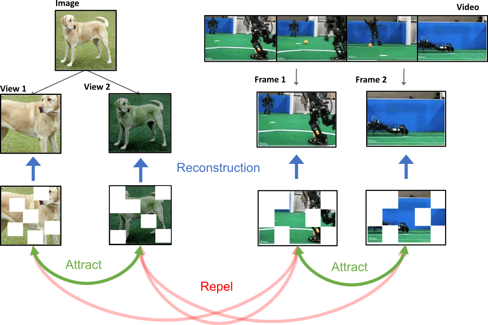
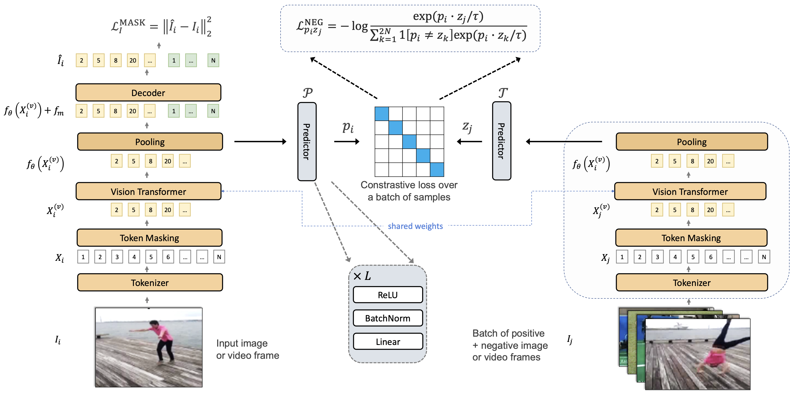
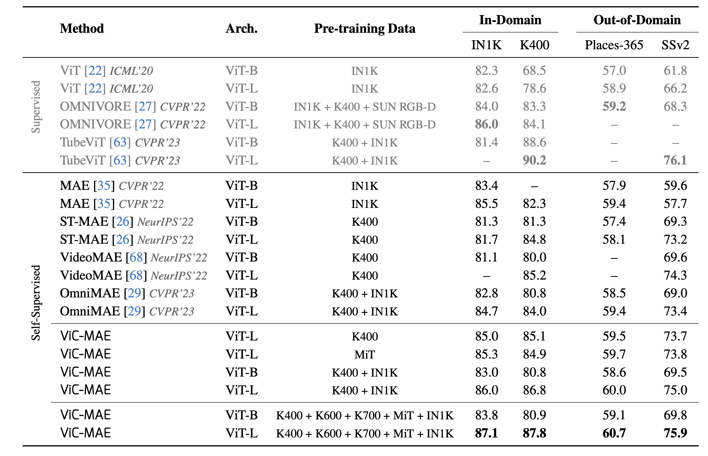

We propose ViC-MAE, a model that combines both Masked AutoEncoders (MAE) and contrastive learning. ViC-MAE is trained using a global featured obtained by pooling the local representations learned under an MAE reconstruction loss and leveraging this representation under a contrastive objective across images and video frames. We show that visual representations learned under ViC-MAE generalize well to both video and image classification tasks. Particularly, ViC-MAE obtains state-of-the-art transfer learning performance from video to images on Imagenet-1k compared to the recently proposed OmniMAE by achieving a top-1 accuracy of 86% (+1.3% absolute improvement) when trained on the same data and 87.1% (+2.4% absolute improvement) when training on extra data. At the same time ViC-MAE outperforms most other methods on video benchmarks by obtaining 75.9% top-1 accuracy on the challenging Something something-v2 video benchmark . When training on videos and images from a diverse combination of datasets, our method maintains a balanced transfer-learning performance between video and image classification benchmarks, coming only as a close second to the best supervised method.



@article{hernandez2023visual,
title={Visual Representation Learning from Unlabeled Video using Contrastive Masked Autoencoders},
author={Hernandez, Jefferson and Villegas, Ruben and Ordonez, Vicente},
journal={arXiv preprint arXiv:2303.12001},
year={2023}}